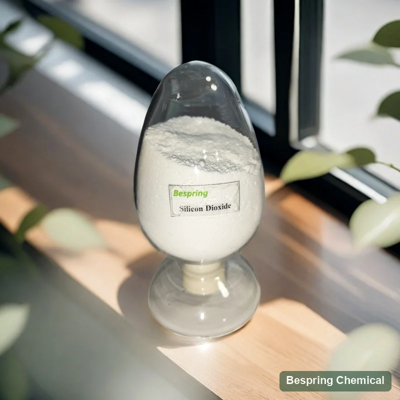
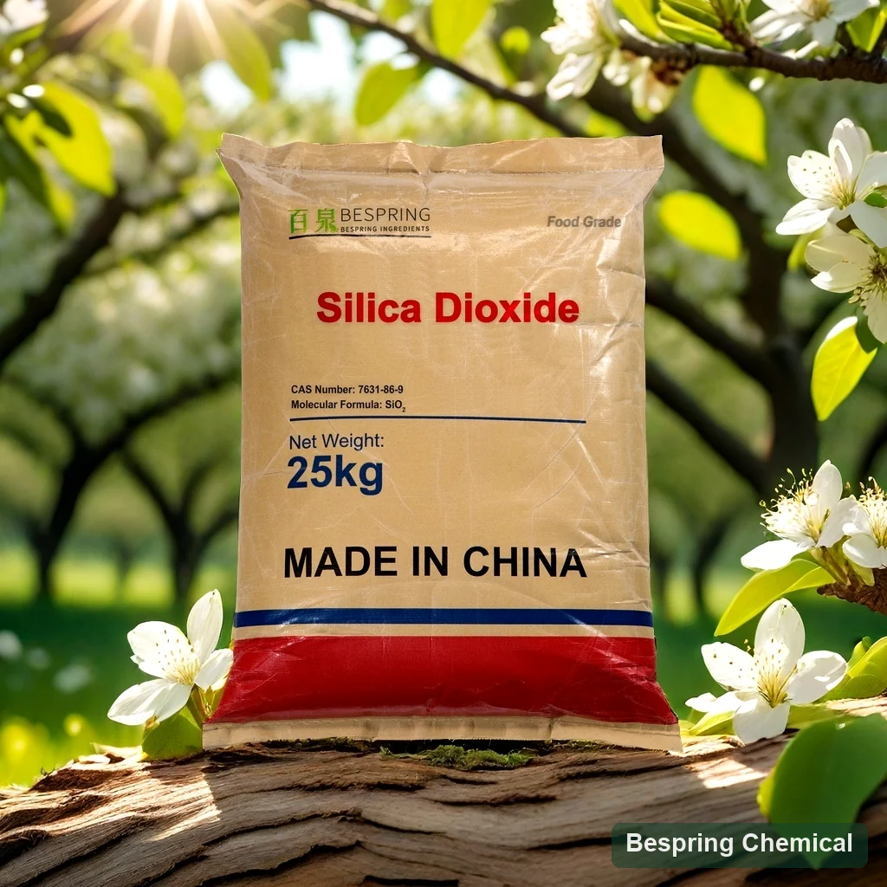
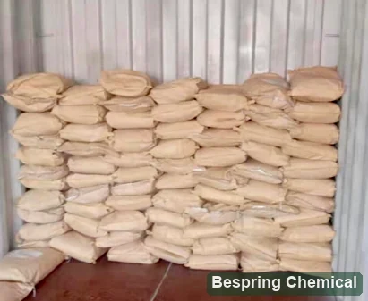
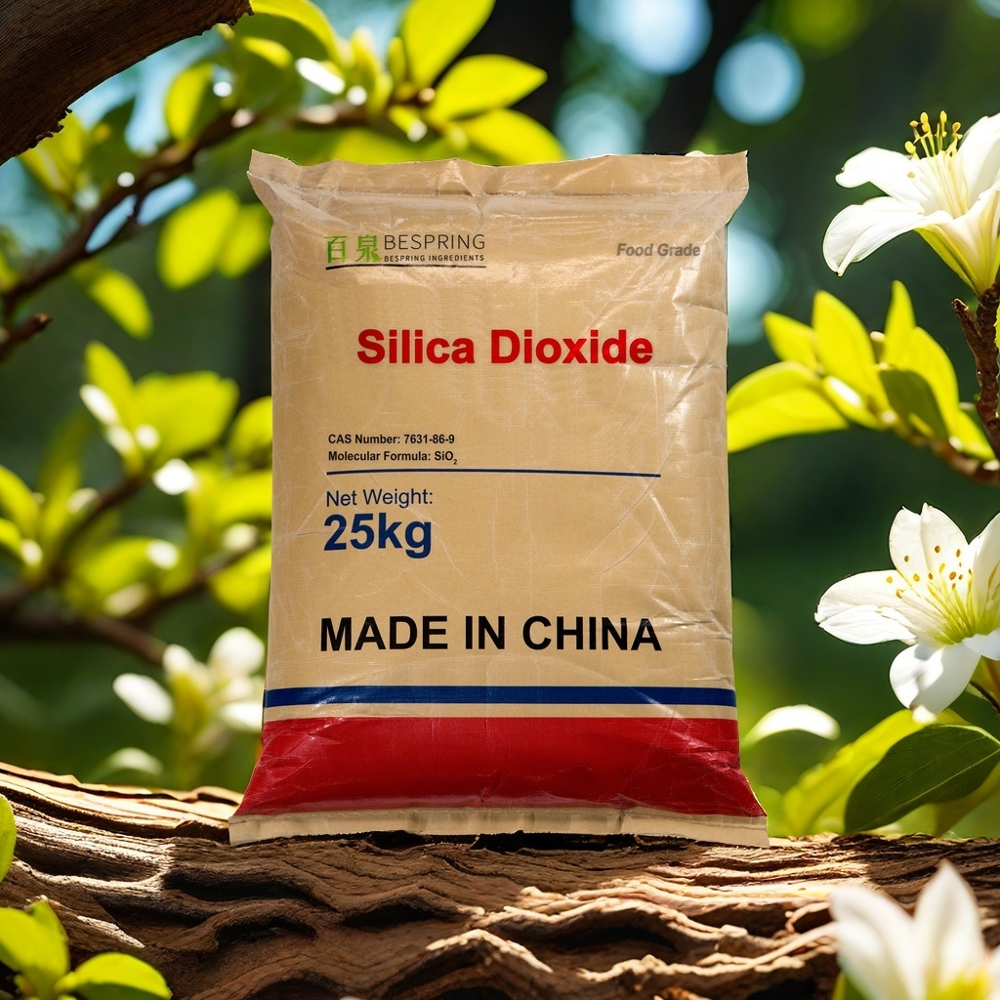

Food grade silicon dioxide, also known as amorphous silica (E551 / INS 551), is used as an anticaking agent in suitable powdered foods. Bespring supplies silica for grade-specific evaluation: compare the manufacturing form, food standard, surface area and particle-size method before selecting an anticaking, carrier or beer-processing grade.
*The reference minimum order is 500 kg. Confirm the selected grade, current order terms and required documents in your quotation.

Labelled silicon dioxide sample.
Identity boundaryAmorphous, not crystalline
AnticakingEvaluate flow after storage
Carrier selectionCheck loading and release
Supply reference*10/15 kg bags
A chemical name is not a complete grade
What is food grade amorphous silicon dioxide?
The FAO/WHO JECFA record identifies amorphous silicon dioxide as INS 551, CAS 7631-86-9. Its conventional composition is SiO2. The EFSA 2024 review describes E551 as uncoated, surface-unmodified synthetic amorphous silica (SAS), including fumed and wet-process forms such as precipitated silica, silica gel and hydrous silica.
Crystalline silica, diatomaceous earth, silica fume and surface-modified industrial silica must not be inferred to be this food additive. Request a declaration of manufacturing form, surface treatment and food-grade status for the exact offered grade. A CAS number alone does not demonstrate purity or permission for a particular food.
Start with the required function
Choose E551 silica by surface structure and process
Powder flow
Anticaking grade
Evaluate flow and resistance to caking in the host powder after the expected handling and storage conditions. A fresh-powder flow result alone does not establish shelf-life performance.
Flow after humidity and compression
Critical caking moisture
Segregation and dust
Liquid loading
Carrier grade
Oil absorption indicates loading potential, but release, taste, oxidation and free-flow after loading determine acceptance.
Loading curve and leakage
Bulk density after adsorption
Release in the final process
Beer processing
Beer-stabilization grade
High surface area and pore volume do not alone predict selectivity, filtration pressure or beverage loss. Run process-specific trials.
Target removal and dose-response
Pressure rise and filterability
For U.S. beer use: filtration removal before final processing
The two reference grades below are identified by intended use, not by a confirmed manufacturing process. Obtain the current TDS before classifying either as fumed, precipitated or gel silica. For U.S. beer production, 21 CFR 172.480(c) requires removal by filtration before final processing.
Compare methods before comparing gradesCompare BET surface area with degassing conditions; oil absorption with liquid, endpoint and basis; particle size with dispersion and instrument; bulk density as loose or tapped. Headline numbers from different methods are not grade equivalence.
Measure the complete powder system
Food application qualification targets
Seasonings & spice blends
Test flow, caking, adhesion to snacks, dust, color dilution and aroma retention after humidity cycling.
Drink & nutrition powders
Measure hopper discharge, segregation, dispersibility, sediment, mouthfeel and package stability.
Track flow and clumping under expected humidity, vibration, compression and storage—not only dry-room screening.
Use-level boundary: Codex and national provisions differ by food category and function. In the United States, 21 CFR 172.480(b) allows anticaking use only in foods where the effect has been demonstrated, at no more than reasonably required and no more than 2% by food weight. This is a U.S. legal ceiling, not a recommended formulation dose; beer-stabilizer and specified adsorbent uses have separate conditions. Apply the rule for the actual destination and food.
Commercial reference data
Silicon dioxide grade comparison
The following commercial reference values describe beer-filtration and dietary-supplement grades. They support grade comparison, not batch acceptance or a claim of compliance with every E551 standard. Agree the identity, limits and test methods in a signed specification, then verify the shipment COA.
Scroll the table horizontally on small screens to compare both grades and the confirmation requirements.
Silicon dioxide — commercial reference specification, not batch COA
Field
Beer filtration grade*
Dietary supplement grade*
Buyer confirmation
SiO2 after ignition
≥96%
≥96%
Confirm assay and ignition methods
Loss on drying / ignition
≤7% / ≤8.5%
≤7% / ≤8.5%
State time, temperature and basis
Lead / arsenic
≤5 / ≤3 mg/kg
≤5 / ≤3 mg/kg
Compare with current destination and customer limits
“Heavy metals as Pb”
≤30 mg/kg
≤30 mg/kg
Aggregate test; not the individual lead result or a complete elemental panel
Soluble salts
≤4%
≤4%
Confirm method and ionic profile if critical
Bulk density
<0.3 g/mL
<0.3 g/mL
Clarify loose/tapped and conditioning
Surface area
≥400 m²/g
190–260 m²/g
BET method and degassing conditions
Oil absorption
Not stated
≥2.0 mL/g
Liquid, endpoint, method and repeatability
Average particle size
8–20 μm
10–20 μm
Method and distribution missing; average alone is insufficient
Pore volume
0.9–1.6 mL/g
Not stated
Method and pore-size distribution
pH
4.5–9
6–8
Slurry ratio, water and temperature
Iron
“25 mg/kg”
Not stated
25 mg/kg has no acceptance comparator; agree maximum, typical value or range
What the reference specification does not establish
The SiO2 assay is reported after ignition, not as elemental silicon or automatically on an as-received basis. Loss on drying and loss on ignition are separate tests; their temperatures, times and sample preparation need to be defined. The iron value “25 mg/kg” has no acceptance symbol. Obtain the approved methods, particle distribution and manufacturing-form declaration before qualification.
The listed lead limit is 5 mg/kg and arsenic limit is 3 mg/kg; these are commercial values, not a statement that every destination standard is met. Compare them using the extraction or digestion method required by your standard. The EFSA 2024 recommendations call for tighter lead, mercury and arsenic limits and an aluminium limit; a scientific recommendation is distinct from an enacted legal specification. Request mercury, aluminium and other customer-required results where applicable.
JECFA amorphous silica
CAS, INS identity and specification history; the record lists Monograph 20 (2017).
Confirm synthetic amorphous, uncoated/unmodified silica, process form, CAS and E/INS identity.
2
Lock every method
Align assay, BET, pore volume, oil absorption, particle distribution, density, pH and impurities.
3
Match the function
Select anticaking, carrier or beer-processing grade from the actual process requirement.
4
Run stress trials
Compare against a control through realistic humidity, storage, transfer and processing.
5
Check permitted use
Confirm food category, use level, label/processing-aid status and destination documentation.
6
Set supply controls
Approve COA fields, sampling, packaging, shelf life, traceability and change notification. Request current TDS, SDS, representative and batch COA, plus any required certificates for the exact product, manufacturing site and validity period.
The reference packing is 10 kg and 15 kg kraft paper bags. Unpalletized 20-foot-container reference loads are 5 metric tons for 10 kg bags and 7.5–8.1 metric tons for 15 kg bags. Confirm the selected grade, actual bulk density, pallet plan and shipment loading in the quotation. The packaging images show 25 kg labels; they do not establish 25 kg availability for either listed grade.
Store in a dry, ventilated, uncontaminated room-temperature environment, away from direct sunlight and outdoor exposure, following the current SDS. The reference shelf life is 24 months from production; agree grade-specific storage conditions and shipment dates before ordering.

25 kg packaging referencePrinted bag weight differs from the 10/15 kg reference packing; confirm the quoted pack.

Historical loading referenceThis photograph does not establish current stock or the loading plan for your order.

Additional Bespring packaging referenceThe printed 25 kg weight is a packaging reference; confirm the offered grade, pack and final label in your quotation.
Buyer questions
Food grade silicon dioxide FAQ
What is food grade silicon dioxide E551 used for?
Food grade amorphous silicon dioxide is used as an anticaking agent in suitable powdered foods. Selected grades may be evaluated for carrier or specified beer-stabilization uses. The grade, intended function, food category and destination rules determine suitability.
Is E551 crystalline or surface-modified silica?
The food-additive identity discussed here is synthetic amorphous silica, not crystalline silica. EFSA describes E551 as uncoated and surface-unmodified. Obtain a grade-specific declaration; an industrial or hydrophobic silica COA does not establish suitability for this food-grade supply.
Does a higher surface area always improve anticaking?
No. Surface area, pore structure, particle distribution, bulk density and compatibility with the host powder interact. Compare grades using the same methods and assess flow and caking after the intended storage and handling conditions.
Can average particle size prove that two silica grades are equivalent?
No. An average does not describe the full distribution or distinguish primary particles, aggregates and agglomerates. Request the dispersion procedure, instrument and an appropriate distribution such as D10/D50/D90; a micrometre average alone is not a non-nano declaration.
What is the difference between anticaking and carrier grades?
An anticaking grade is evaluated for flow and caking in the host powder. A carrier grade must also satisfy the intended liquid-loading, leakage, release and active-recovery requirements. The two functions do not make grades interchangeable.
Does the table prove JECFA or EU compliance?
No. It is a commercial reference table, not a complete standard comparison or batch COA. Confirm the manufacturing form, assay basis, test methods and all applicable impurity limits against the selected current standard before approval.
Are 25 kg bags available for the listed grades?
The commercial reference lists 10 kg and 15 kg bags, while the packaging images show 25 kg labels. Confirm the actual pack for the quoted grade. The reference minimum order is 500 kg; current order terms and container loading require quotation confirmation.
Which documents should a buyer request?
Request the current signed specification or TDS, SDS and representative COA, followed by the shipment batch COA. Specify any required manufacturing-form, particle-characterization, origin, allergen, food-safety, Halal or Kosher documents; verify availability and product, site and validity scope.
What should a silicon dioxide RFQ contain?
State the food application and destination market, required silica form and food standard, critical purity and physical-property limits, test methods, quantity, packing, destination port, delivery terms and timing. For carrier or beer use, include the relevant loading or process requirements.
Content updated: .
Function-led sourcing
Request a food grade silicon dioxide quote
Send your application, required standard and critical parameters so our team can review the grade, documents and commercial requirements.
Anticaking, carrier or beer-process function
BET, oil absorption and particle methods
Host powder, storage stress and acceptance test
Quantity, packing, destination port, delivery terms and documents